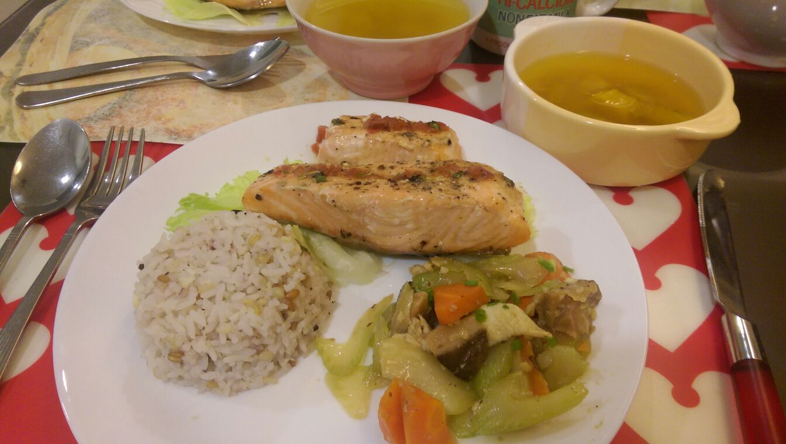
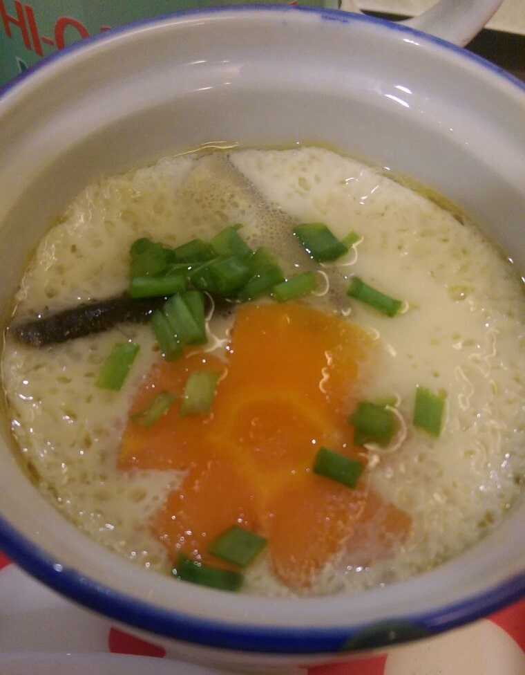

Blog
Wagyu Beef Steak prepared by my brother!

20th November 2016
Last night, my brother prepared a lovely feast for my family again! He prepared pan fried Wagyu beef steak along with some grilled baby potatoes, a simple garden salad and homemade mushroom soup. The meal was absolutely delightful and the beef was extremely tender. Not to mention the grilled baby potatoes and the garden salad really complemented the beef perfectly. I also loved the salad as it is simple and not overly complicated and tasted light and refreshing. The meal was completed with the homemade mushroom soup which was really to my liking. The soup was not too thick but at the same time had some starchiness to it. There was also small bits of mushrooms which added some flavour and added dynamic to the soup. I think that the ingredients are slightly pricey but overall, this meal would've cost a lot more if you were to order the same dishes outside. Moreover, the atmosphere in the comfort of your own home and company of family members is definitely prefarable to a restaurant. I would give the presentation of this meal a 7/10 as it is not very great as it is homemade. The meal itself deserves solid 9/10 as the steak was perfectly cooked, extremely tender and juicy with the hint of salt, pepper and rosemary. The baby potatoes were soft and the fragrance of the herbs can be tasted when eating it. The salad was also good as it was simple. Paired with some salad dressing, it was very refreshing and also crunchy.


Tonkotsu King Four Seasons @ Bugis Village

11th November 2016
Had a great dinner with my friends to commemorate my birthday. I ordered a tonkotsu spring ramen (king). The ramen soup base was simply perfect as it was extremely flavourful. Simply the best ramen soup base I ever had hands down. The flavours of the ingredients really complemented each other and the cheese really added a whole new dimension to the ramen and the pork was simply gorgeous. The price of the king ramen was roughly $17-$18, abit on the high side but if you were to ask me, I would definitely recommend it if you don't mind the slightly high price point. Also to commemorate my birthday, I had a yuzu ice cream, courtesy of my friends and unfortunately did not manage to get a picture of that as the situtaion did not permit. The yuzu ice cream however, wasn't the best but definitely refreshing nonetheless. I woul also like to reccomend their other outlets as this ramen place was open by a chef named Keisuke Takeda. He founded Ramen Keisuke which opened many outlets around Singapore. The interesting thing is that each outlet specialises in different things for each outlet. For example, they also have Tori King, which specialises in Chicken, Tonkotsu King which specialises in Pork, Gyoza King for the Gyoza lovers, Lobster King which specialises in lobster broth and Kani King which specialises in crab broth! The thing that I enjoy the most about Keisuke Ramen is their broth. Their broth is extremely flavourful and thick, the best ramen broth I had. I would definitely reccomend this place to anyone looking for great ramen.
Thanks guys again for the excellent time!
Ramen (Spring ramen (king) ) - 9/10
Yuzu ice-cream- 7/10
Company-10/10💗
Baked salmon and Chawanmushi!

7th November 2016
Last night, my family prepared a fusion meal of Baked salmon, pumpkin soup and chawanmushi for dinner. I really liked the different styles of each item as they were prepared by different chefs ; my brother, my father and my mother. Each item had their own speciality and together they worked out surprisingly well considering the different styles each dish had. First, I will talk about the baked salmon which was prepared by my brother. The salmon was very flavourful as the sauce that was mixed complemented the fish well and added some zest to the dish. The salmon was cooked to perfection as the meat was just cooked and not undercooked nor overcooked. The salmon skin was also baked well as the skin was crispy. The salmon was also stuffed with a little butter and some rosemary, which helped to add flavour to the fish. The pumpkin soup was prepared by my mother. It wasn't your normal pumpkin soup as it wasn't the creamy type. It was however healthier as there was no cream added and the soup wasn't too strong. The soup was very gentle but not bland and the pumpkin flavour definitely permeated the soup to provide it with a very refreshing taste. The pumpkin cubes added some dynamic to the soup so that it was not too plain. Moving on to the chawanmushi. The chawanmushi was prepared by my father. The chawanmushi may not look the best as it would normally look smoother. However, after tasting it, it is evident that looks can be deceiving. The chawanmushi was extremely soft and flavourful. I could taste the mirin (a type of rice wine) in the chawanmushi and it was definitely enlightening. My father also added some soy sauce and some fish sauce to further enhance the flavour. The meal also provided us with quality family time as we worked together to prepare the meal and during the meal, we could sit together and enjoy a meal, a rare occasion as most of the time we would be busy with either school or work. This made it rare for our family to enjoy a good dinner together.

